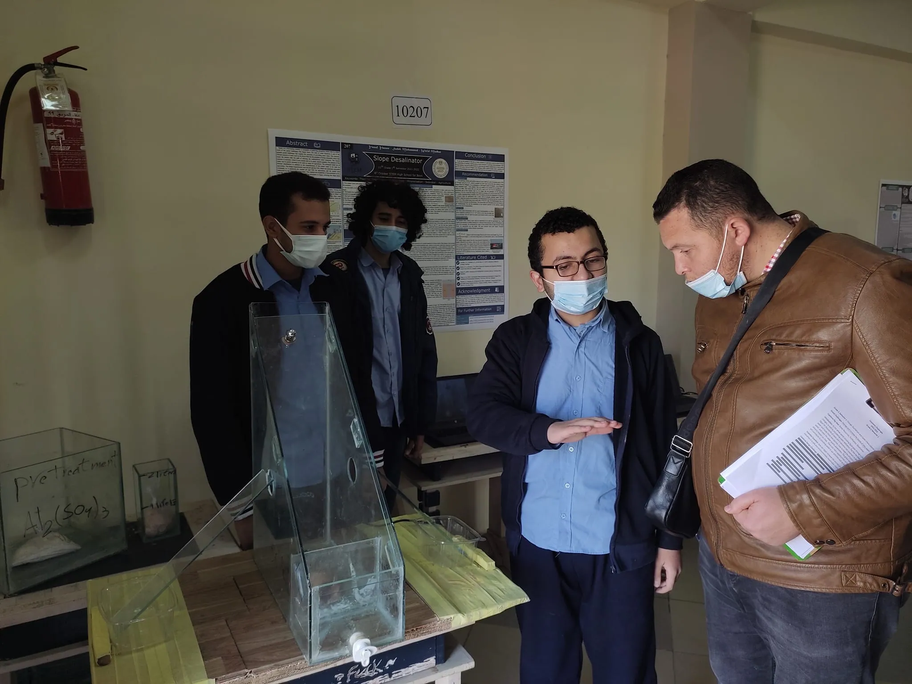
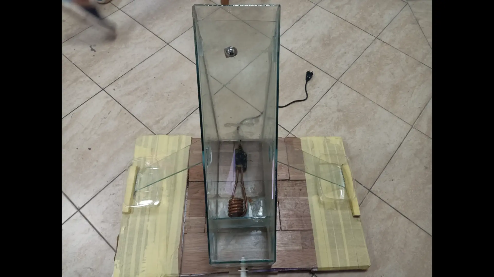
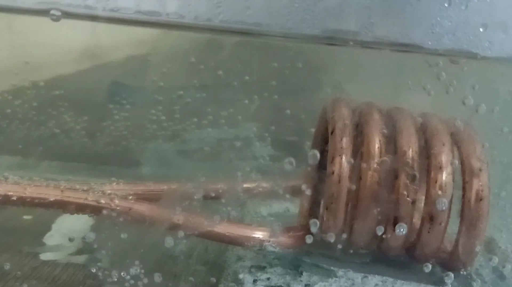
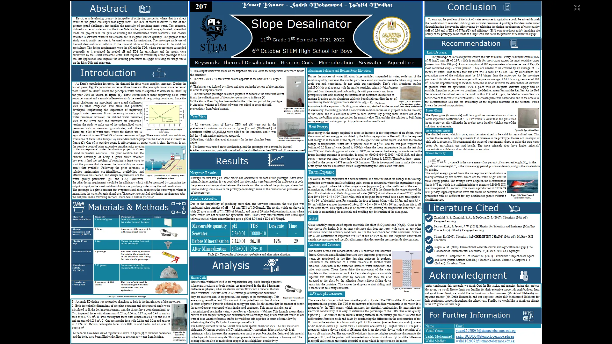

Grade 11, 1st Semester Capstone Project | Slope Desalinator
Exhibtion Photo: Yusuf Yasser, Walid Medhat, me, and an evaluator from the faculty of
mechanical engineering.

Outer photo for the prototype.

The heater is intensely boiling the water.

Full Size Exhibtion Poster

...
Brief
As any of the school's Capstone Projects, the project focues on solving one of the 11 grand
challenges of Egypt, and out of the those choices, the project's requirements focused AGAIN
on
Clean Water Resources.
"How can Egypt increase the sources of water for domestic, agriculture, or
industries in a safe and environmentally responsible manner?" made the
extremely specific design challenge (file with constraints
and project's requirements put by the Egyptian Ministry of Education). In short, the
challenge focused some points. Among the 3 main uses of water (agricultural, domestic, and
industrial) uses, one had to be chosen. After finding the suitable field, the project shall
focus on increasing the sources of water for that specific field but in a way that is safe &
sustains environment, matching the Egyptian 2030 vision.
Emotions
Egypt has always been a country of agriculture, and I cannot forget my grandfather's stories
about the best banana kilogram that he bought immediately after the 1973 war (I can
confidently claim that each and every Egyptian can claim to ). That
encouraged my team to work on utilizing the sources of water for agriculture. For a team,
working on agriculture was a convenient goal: agriculture usually accepts all sorts of
water, unless the water's pH isn't suitable for the specific field or TDS (Total Dissolved
Solids) was too high that it means the presence of heavy metals or too low that it refers to
the absence of salts. Among the various types of water that could be utilized (domestic,
rainwater, underground water, and others), my team found rainwater more convenient as it was
the focus of the 10 th Grade challenge.
Science
The project depended on a container that holds waiter and a heater. The project's idea was
simple: we need to heat water and, then, condense the water again to get the pure water
particles to condense together (without pollutants) in the collecting place, returning to
the liquid water state. That desalinator has the advantage of using a slope to fasten the
movement of particles towards the collection place. A brilliant addition to the protoype was
adding the aluminium sulphate (alum) powder, which is a cheap desalinator that forms
easily-segregated compounds with pollutants - easing the process of water desalination.
Role
As usual, much research & writing was needed, especially as our team consisted of 3 members
(not 4 as most teams), giving me more work to do. In addition, the scientific base of the
protoype needed much research and adjustements as it contained concepts water desalinators,
heat, energy, and other multi-disciplinary concepts. Since the protoype consisted of zero
software, my team had to go to multiple vendors. Finally, I strengthened the design skills I
learned the previous years by handling the portfolio's design.
- The Poster:
- The Portfolio (research paper):
- The Exhibtion Presentation:


{kind=link}